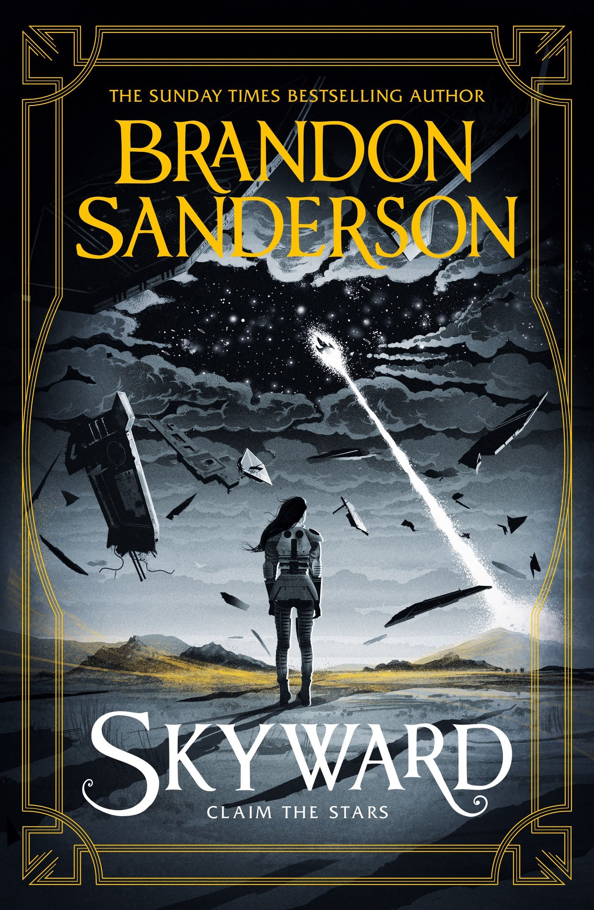

Skyward
⭐️⭐️⭐️⭐️⭐️
Format: 🎧 (15 hours 28 minutes)
One day I may find something written by Brandon Sanderson that I dislike, but this isn't the day. Engaging, easy to follow, humorous, and relatable, but at the same time with a storyline I didn't anticipate, all in a new rich (yet somehow familiar) world. Sure, this book obviously sets itself up for a sequel, but don't let that stop you from enjoying the book now.
⭐️⭐️⭐️⭐️⭐️
Format: 🎧 (15 hours 28 minutes)
Second Review
This was a revisit of the novel in my preparation for reading the newest in the series. This book felt really enjoyable to me. I'm amazed that even in a novel of this size (intended for a young adult audience), the author is able to build such a rich world for the story to be told. When raised as the offspring of a (dead) coward, societal expectations can be a major obstacle to overcoming your dreams. But the protagonist, Spensa, takes things on with aplomb. She's a great character.
- Prior: The New Jim Crow
- Next: Starsight